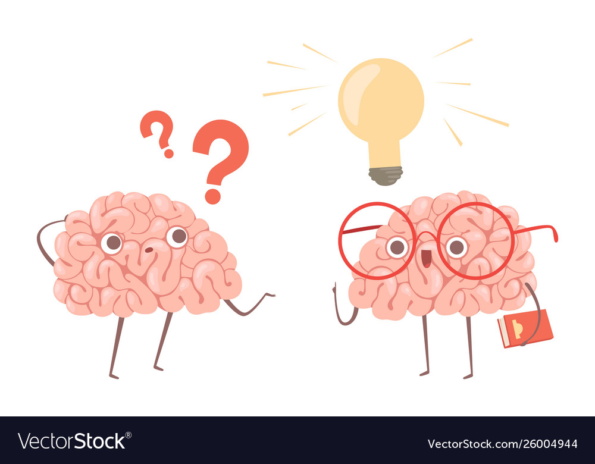

Personal Development
Home
Professional
Personal
Autobiography
Development
Storyboard
Refrence
My Top 3 Strengths
-
Leadership ability
Due to my excellent leadership skills, I can successfully guide a team in accomplishing a task. I can lead the way and
guarantee that no team member is left behind, that their opinions are heard, and that we all do our part.
-
Communication abilities
Being able to speak well with others and provide the required information to them is one of my talents. I can adjust my
communication strategy to fit the different circumstances or target audience that I'm addressing.
-
Problem-solving skills
This is one of my strongest traits and it enables me to sit and analyze complex problems. I consider myself to be a good problem
solver because I take the time to evaluate and solve the problem. I am able to think critically and to analyze facts to find the
best potential solution when appropriate. I'm also a fantastic team player when it comes to problem-solving.
